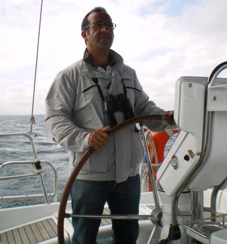

-
Hola, me llamo Santiago Sánchez Colomer y estudié Patrón Mayor de Cabotaje de la Marina Mercante en Cádiz.
-
Navegué en barcos pesqueros, remolcadores y barcos de apoyo a barcos atuneros, por el Mediterráneo y Gran Sol (Irlanda).
-
Actualmente navego como patrón en la Corporación de Prácticos del Puerto de Cartagena.
-
En el año 2007, creé Colomer Escuela Náutica, compaginándola con los prácticos de Cartagena.
-
Después de años formando a patrones de forma tradicional, he creado el iPer, adaptándome a las nuevas tecnologías y facilitando al máximo el aprendizaje del mismo.
-
Este curso es el fruto de toda la experiencia adquirida tras años de navegación y enseñanza en el mundo de la náutica.
-
Comprendiendo este curso y aprobando los test, estarás 100 % preparado para aprobar el teórico del PER.
-
A través de este curso, empezarás un camino, el ser patrón de un barco, como se que lo lograrás, permíteme un consejo, actua con seguridad y firmeza, aunque te equivoques, la mar nos enseña cada segundo que estamos junto a ella.
Santiago Sánchez Colomer
Patrón Mayor de Cabotaje de la Marina Mercante
iPer